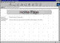

| ||||
Now that the Personal Web is finished, you can display it in your Web browser to preview your site's layout and appearance. You can also navigate between the four pages and test the hyperlinks you created. Previewing a FrontPage-based Web site works just like browsing to a site on the World Wide Web.
You will learn how to publish your site on the World Wide Web in Lesson 3.
The list of pages appears. Assuming that you did not close any of the pages used in this lesson, you should see the Home Page, the Interests page, the Photo Album page, and the Favorites page listed here.
If you previously closed the home page, simply open it again to display it in the FrontPage Editor.
Preview in Browser displays the active page in your Web browser. This lets you see exactly how the page will appear in your favorite Web browser before you publish your FrontPage-based Web site. You must have at least one Web browser installed on your system for this feature to work.

Click image to enlargeThe home page is displayed in your Web browser. Click the buttons on the navigation bar to display the other pages in your Personal Web.
Did you find this material useful? Gripes? Compliments? Suggestions for other articles? Write us!
© 1999 Microsoft Corporation. All rights reserved. Terms of use.